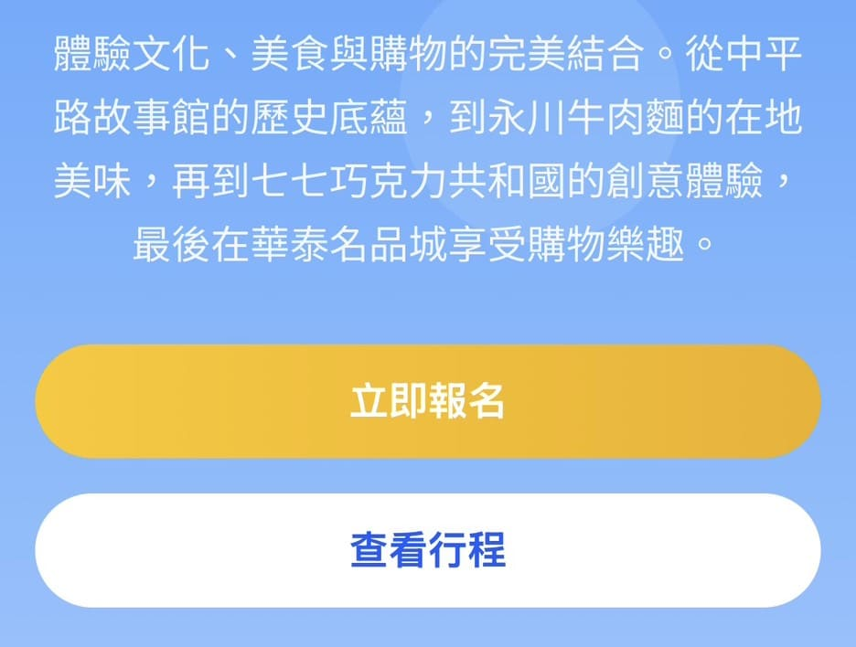
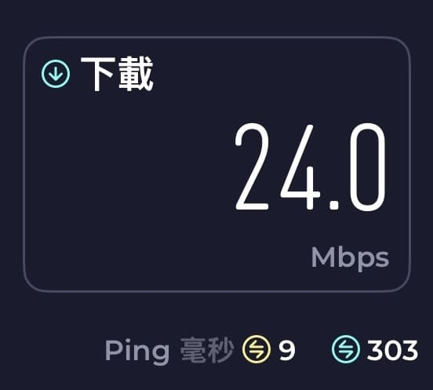
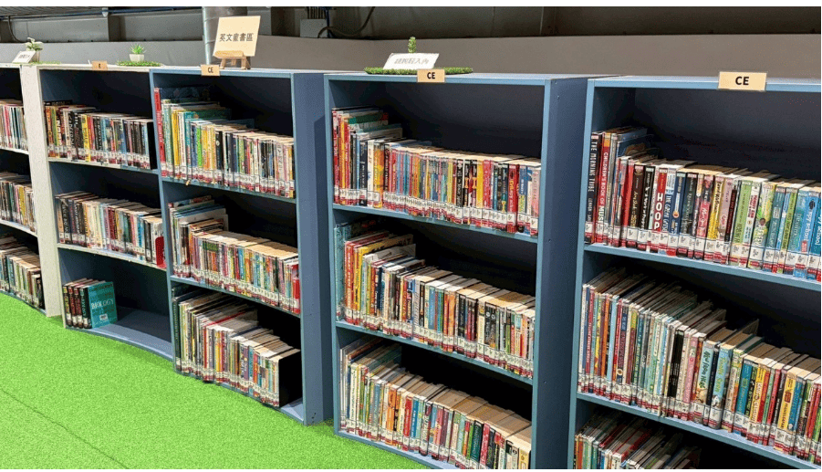

課程活動：企業概論專案
活動說明:我負責建立 Instagram 與 LINE 官方帳號，並參與桃園在地旅遊企劃與居民優惠設計。透過團隊討論規劃合適的行銷策略，深刻體會企業運作仰賴成員各司其職與密切合作。
活動說明:我負責建立 Instagram 與 LINE 官方帳號，並參與桃園在地旅遊企劃與居民優惠設計。透過團隊討論規劃合適的行銷策略，深刻體會企業運作仰賴成員各司其職與密切合作。
姓名：劉怡君
校系：中原大學 資訊管理學系
slogan：向外看世界 向內聽自己
自我介紹：個性有耐心，見人遇到困難會主動協助，雖然偶爾容易拖延，但正在透過制定待辦清單改善，提升執行力


